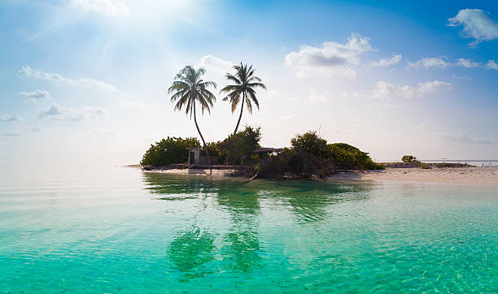

|  |
Playas espectacularesVenezuela cuenta con una costa caribeña impresionante, repleta de playas paradisíacas que cautivan a los visitantes.. Los turistas pueden disfrutar de aguas cristalinas, arenas blancas y una rica biodiversidad marina, perfectas para nadar, hacer snorkel, practicar deportes acuáticos o simplemente relajarse bajo el sol. |

|
Exquisita GastronomiaLa comida venezolana es reconocida por su sabor y diversidad. Un plato emblemático es la arepa. También se destacan el pabellón criollo, y las cachapas. Además, los visitantes pueden degustar una amplia gama de frutas tropicales frescas y disfrutar de bebidas refrescantes como el papelón con limón. |
Población acogedoraLos venezolanos son conocidos por su calidez y hospitalidad. Los visitantes se sienten bienvenidos en todo el país, y la población local está dispuesta a compartir su cultura, tradiciones y alegría de vivir, lo que hace que la experiencia de viajar por Venezuela sea aún más enriquecedora. Los visitantes pueden sumergirse en la rica cultura venezolana, bailar al ritmo de la música caribeña y establecer conexiones significativas con las personas que encuentren en su camino |